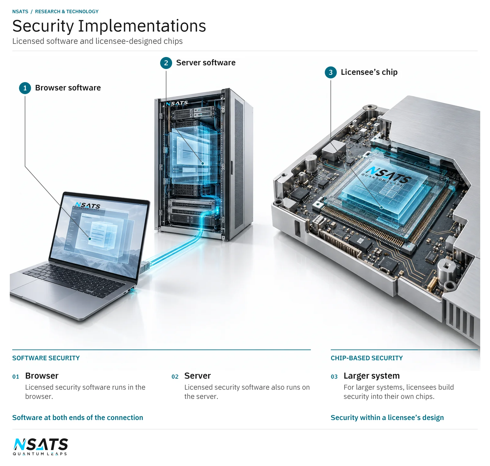

Protecting information during use
Information can pass through several parts of a device during a task. A processor uses it, memory holds it and internal connections carry it onwards. Security architecture considers these locations together, including which components can use the information and how it is handled as the task proceeds.
In ordinary security terminology, data at rest is held for later access, data in transit is being transferred, and data in use is undergoing processing. The same information can pass through all these conditions during a task. Protection must therefore account for its stored copies, the paths carrying it and the access needed while a calculation uses it.
A threat model describes what a system must protect, who is permitted to use it and the unwanted actions the design must address. It records assumptions about access to software and equipment. Those assumptions matter because a design for a remotely accessed application faces different access questions from equipment that a person can handle directly.
Authorisation concerns whether a user or component is allowed to perform a particular action. Authentication concerns establishing the identity used for that decision. A system can recognise a user while still restricting which records or functions that user may access. Its rules need to identify the action as well as the identity.
In ordinary software, sensitive data can exist in temporary working values as well as in the original record. A calculation may produce intermediate values that remain sensitive even when its final result is intended for a wider audience. A security assessment follows who can access those values while the calculation is running and after its immediate use has ended.
Memory and internal connections
NSATS’s technology covers protected computational information, memory and internal data paths. These subjects connect security requirements to the design of processors, memory access and movement between components. An application’s handling of sensitive information helps define where protection is needed and what a developer should examine.
A program may use sensitive information to produce a result that has a different purpose or audience. Its handling requirements need to account for that distinction.
In an illustrative personnel-reporting application, individual absence records are inputs to a department summary. An administrator may need the individual records, while a department manager is permitted to receive only the summary. The calculation uses detailed information even though the intended report has another audience. Its temporary working data and diagnostic records need handling rules consistent with the information they contain.
Ordinary applications can create additional copies when they exchange data with another component or record an error. Each copy has a location, an intended reader and a period of use. An assessment can inventory those copies and check whether the permissions at each location match the application’s requirements. The source record’s access rules do not automatically describe every later copy.
In ordinary systems, interfaces between components also separate responsibilities. The component making a request needs permission to ask for the action, while the component returning a result must apply the handling rules for that result. Those responsibilities remain relevant when the components belong to the same device. Physical proximity does not define the application’s access policy.
Post-quantum work
Quantum computing poses a future threat to the public-key cryptographic methods widely used to protect communications and authenticate information. Information that must stay confidential for a long time needs protection that remains effective as computing capabilities develop. Post-quantum cryptography develops classical methods to address these threats.
In general computing, public-key methods are used in establishing protected communications and checking the origin of information. The application relies on those functions to decide which connection or message to trust. Its security also depends on the identity associated with a key and the authority granted to that identity. The cryptographic operation and the surrounding trust decisions serve different roles.
Some information remains sensitive long after the transaction that created it. A personal record can reveal private circumstances years later, while an engineering record may describe equipment still in service. Its confidentiality requirement follows that continuing sensitivity, even when the software or equipment holding it is replaced. Security planning must consider that lifetime as well as the immediate use of the record.
NSATS’s post-quantum security uses classical computing methods inspired by quantum mechanics.
For browsers and the servers they connect to, NSATS licenses its post-quantum security as software under standard software licence terms. The licensed software runs in the browser and on the server. For larger systems, licensees build the security into their own chips.
The system question is how security architecture, cryptographic functions, key handling and protected processing fit together in the licensee’s implementation. An assessment should follow information through the system as well as examine the cryptographic function.
In ordinary cryptography, a key is a value used by a cryptographic function. Key handling covers who may use it, where it is held and when its use is withdrawn. A system needs a person or component responsible for these decisions, as well as software to perform the operations.
Protected processing, in ordinary systems, concerns access to information while work is performed on it. A function can depend on other software for identity checks or data handling, so the assessment must identify those dependencies rather than examine the calculation in isolation.



Implementation and licensing
Security-sensitive applications bring their own requirements for access, information handling and system operation. These requirements can guide the scope of a licensee’s implementation and the evidence needed to assess it. NSATS licenses intellectual property for incorporation into licensees’ software, chips, devices and systems. NSATS sells technology licences, not chips. Its technology helps licensees manufacture their own chips.
A licensee can bring an inventory of sensitive inputs, intermediate information and outputs, together with the users or components permitted to access each. It should identify how information enters the system, where it is used and which results leave it. Existing identity and access arrangements are constraints on the implementation, alongside the equipment in which it must operate.
The licensee can also define the situations its assessment must examine: permitted requests, refused requests, interrupted work and changes in permission. Expected outcomes should include how the application recognises refusal or incomplete work. These are behavioural requirements to be checked in the licensee’s own system.